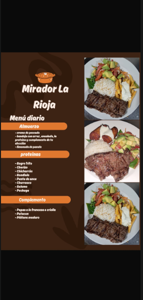
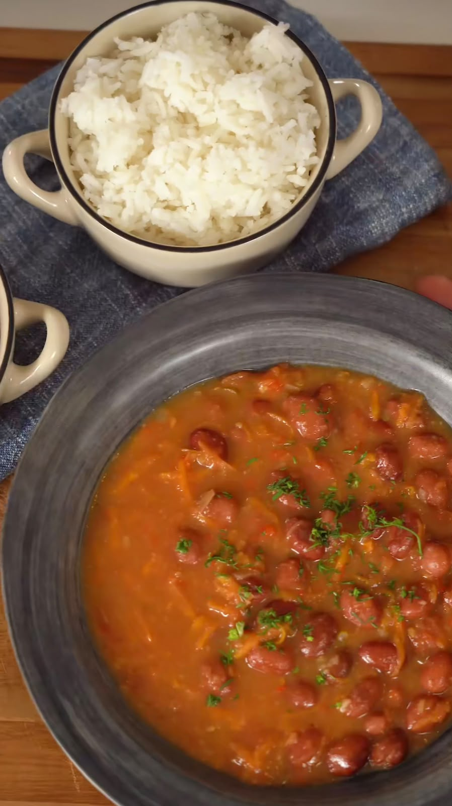

Platos Típicos
Descubre los sabores tradicionales que representan la cocina riosuceña.

Churrasco
Un corte de carne a la parrilla, infaltable en la mesa riosuceña.

Empanadas
Un clásico local con recetas y rellenos que varían de un negocio a otro.

Comida Tradicional
Sancocho, sudado de pollo y frijoles: los sabores caseros que representan la cocina de la región.
Aquí irá el mapa interactivo